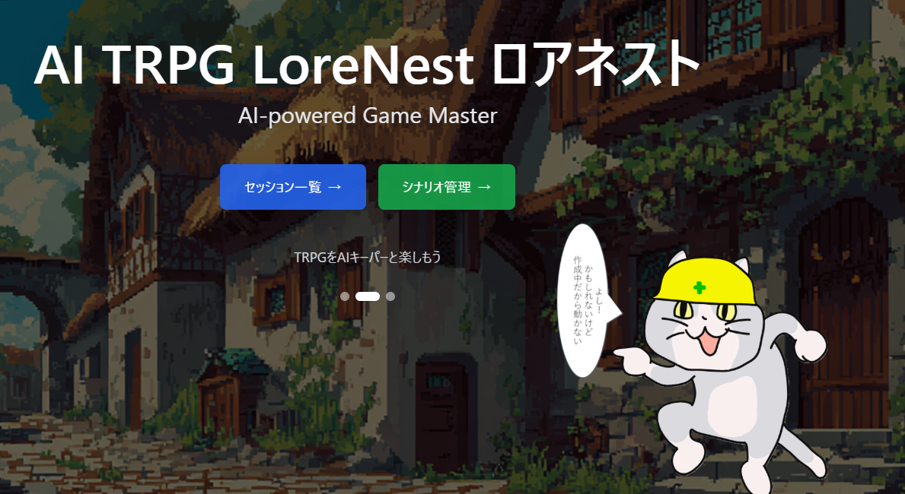
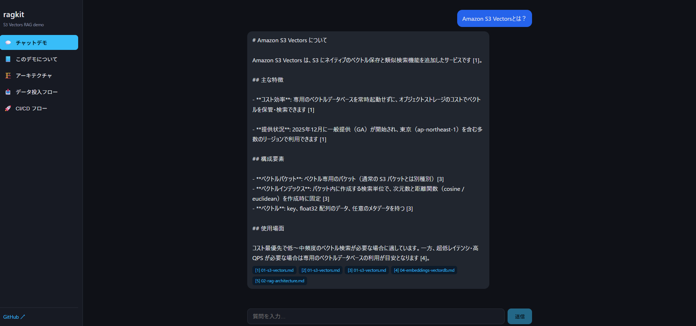
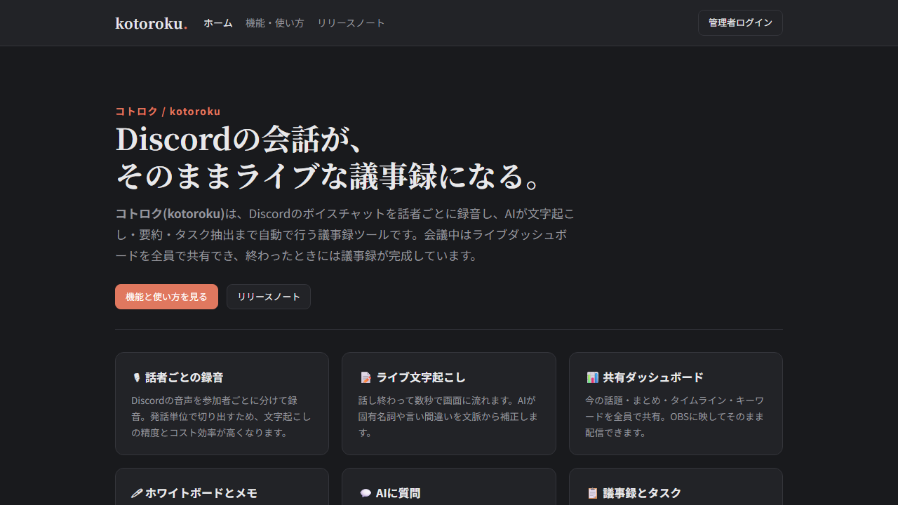
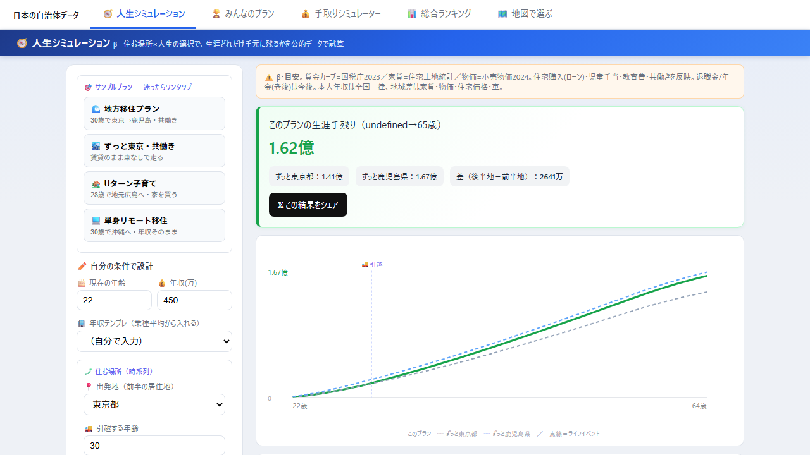
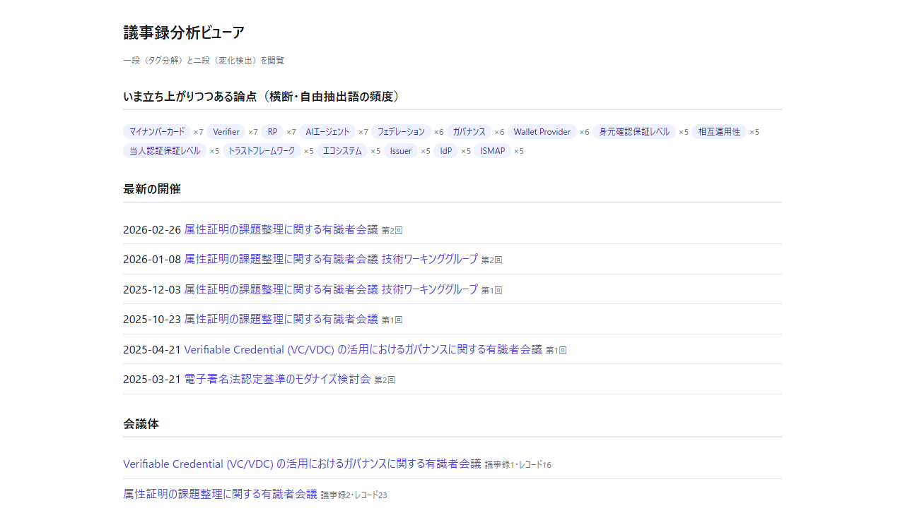

webアプリ
作成したWebアプリケーション

AI TRPG LoreNest
AIがキーパーをするTRPG。

クラウドLLM RAGアプリ
資料を事前に読み込ませてRAG問い合わせができるAI・データ活用Webアプリ。

議事録生成AI コトロク
Discordの会話がそのままライブな議事録になるAI議事録ツール。

人生シミュレーター
公的統計データから「どこに住むと生涯いくら手元に残るか」を試算できるWebアプリ。

議事録分析プラットフォーム
政府の公開議事録をAIで論点単位に構造化し、回をまたぐ変化を可視化するWebアプリ。
VRウェーブディフェンスゲーム
Meta Quest向けの銃で戦う一人称VRウェーブ防衛ゲーム。

プロジェクト管理ツール
タスクの進捗管理やチーム連携ができるWebアプリ。